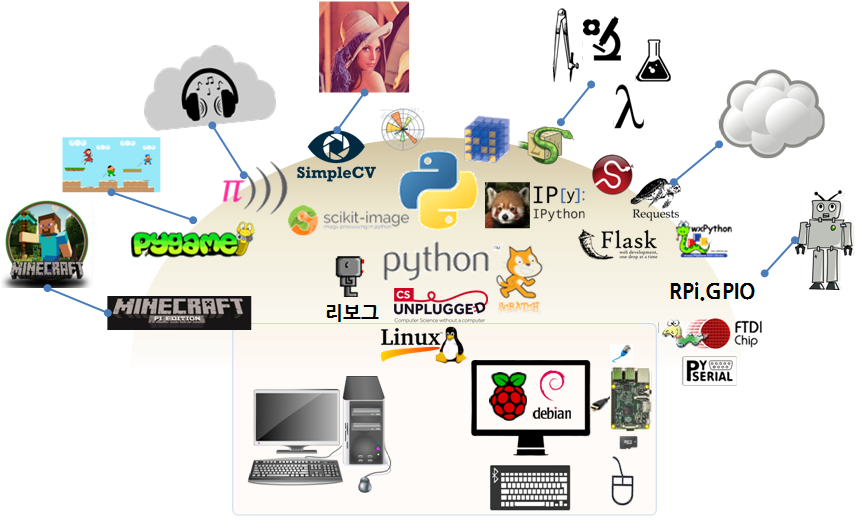

R 파이썬 소프트레이어 클라우드, xwMOOC
라즈베리 파이 포트폴리오
학습 목표
- 라즈베리 파이 포트폴리오
1. 라즈베리 파이 파이썬 모듈

| 분야 | 모듈명칭 | 모듈 설명 | URL |
|---|---|---|---|
| 게임 | python-pygame | 파이게임(Pygame), 2D 게임개발 프레임워크 | http://www.pygame.org/ |
| Minecraft pi | 마인크래프트 파이(Minecraft Pi), 온라인 레고 3D 마인크래프트 게임 | http://pi.minecraft.net/ | |
| 시각 정보 | SimpleCV | SimpleCV, 컴퓨터 비젼 API | http://simplecv.org/ |
| python-imaging | PIL(파이썬 이미지 라이브러리), 이미지 처리(Image Processing) | http://www.pythonware.com/products/pil/ | |
| Scikit-image | 이미지 처리 알고리즘 | http://scikit-image.org/ | |
| 웹 인터넷 | python-requests | 요청(Requests), 사람을 위한 HTTP | http://www.python-requests.org/ |
| python-flask | 플라스크(flask), 웹 개발위한 경량 프레임워크 | http://flask.pocoo.org/ | |
| pip install feedparser | Atom과 RSS 피드 파서 | https://pypi.python.org/pypi/feedparser | |
| 과학기술 | python-scipy | 과학 컴퓨팅(Scientific Computing) | http://www.scipy.org/ |
| python-numpy | 데이터 분석 선형대수 라이브러리 | http://www.numpy.org/ | |
| 사물인터넷 | python-rpi.gpio | Rpi.GPIO, GPIO 입출력 포트에 접근 라이브러리 | http://sourceforge.net/p/raspberry-gpio-python/ |
| python-serial | 시리얼 포트에 접근 라이브러리 | http://pyserial.sourceforge.net/ | |
| 프로그램 개발 | python-wxgtk2.8 | GUI 개발 프레임워크 | http://www.wxpython.org/ |
1.1. 파이썬 모듈 설치
파이썬 모듈을 설치하는 방식은 sudo apt-get 방식, python setup.py install 방식, 파이썬 팩키지 설치자(Python package installer) pip를 이용한 방식이 있다.
apt-get 방식
$ sudo apt-get install python-dev python-rpi.gpiosudo apt-get install python-dev python-rpi.gpio 명령어를 통해서 RPi.GPIO 팩키지를 설치한다.
pip install 방식
$ easy_install pip
$ pip install flask혹은 파이썬 팩키지 설치자를 먼저 설치하고 나서, 플라스크를 pip 를 통해서 설치한다. 윈도우에서도 비슷한 설치과정을 통해서 파이썬 팩키지를 설치한다.
python setup.py install 방식
$ python setup.py install파이썬 팩키지 번들로 묶여진 파일을 디렉토리에서 python setup.py install 명령어로 설치한다. 이때 사용된 것은 파이썬 distutils 도구다.
1. 라디오
sudo apt-get install vlc 명령어를 통해서 VLC 미디어 재생기를 설치한다.
프로그램을 실행하고 URL을 입력한다.
$ vlc http://www.a-1radio.com/listen.pls -I dummy